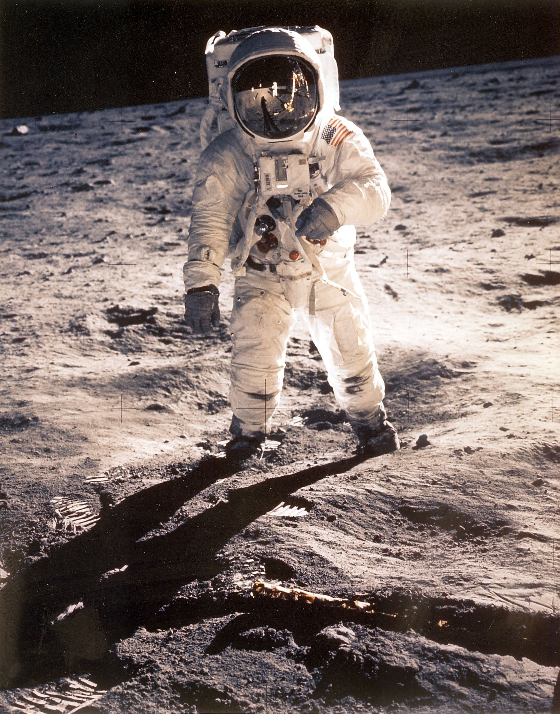
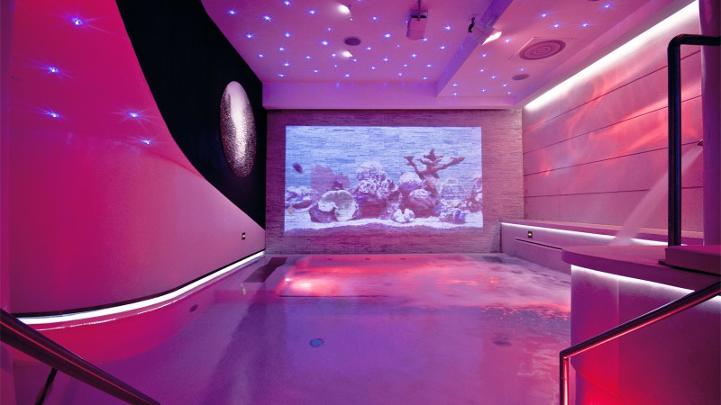
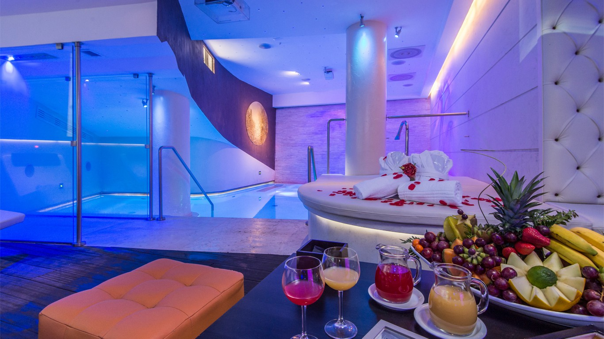
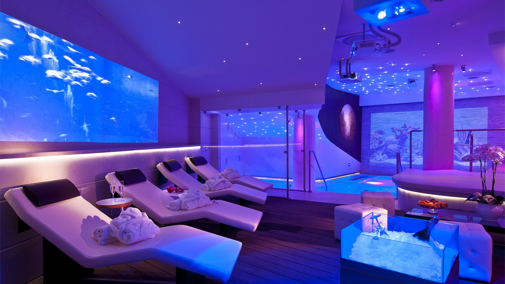
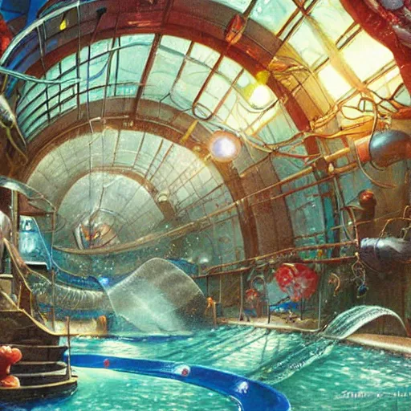
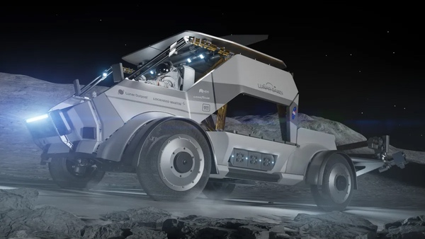
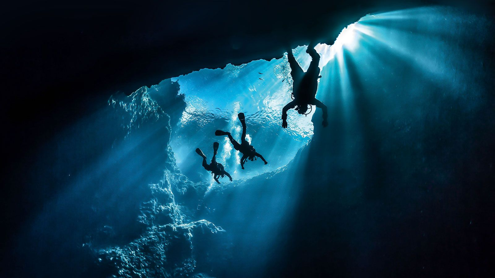
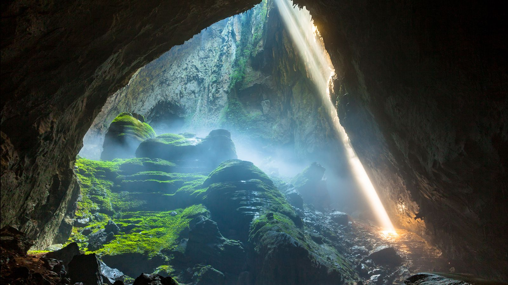
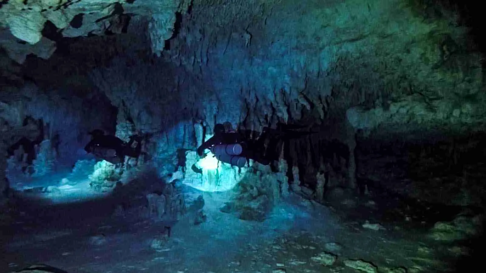

Zero Gravity
Get ready to defy gravity with our Zero Gravity experience at Voyager Hotel! This one-of-a-kind experience offers guests the chance to float, flip and soar in the unique environment of microgravity, creating unforgettable memories and endless fun.
Activity Overview
1. Pre-Flight Orientation
Start your Zero Gravity adventure with an engaging orientation session led by our knowledgeable space crew. Learn about the science of microgravity, its effects on the human body, and essential safety guidelines to ensure you make the most of your Zero Gravity experience.
2. Suit-Up
Slip into our specially designed Zero Gravity suits, made for maximum comfort and flexibility. These suits feature lightweight materials and adjustable fittings to accommodate all body types, ensuring you can move freely and comfortably in the Zero Gravity environment.
3. Zero Gravity Chamber
Enter our state-of-the-art Zero Gravity Chamber, a spacious, cushioned area designed for maximum fun and safety. The chamber is equipped with soft walls and floors to allow for safe and enjoyable movements, whether you're floating, tumbling, or performing acrobatic maneuvers.
4. Weightless Play
Experience the thrill of weightlessness as you float effortlessly through the chamber. Try out a variety of activities tailored for Zero Gravity, including Floating Races, Aerial Acrobatics, Zero-G Catch or Space Volleyball, or simply relax and enjoy the sensation of floating, taking in the serene and surreal experience of microgravity
5. Guided Exercises
Participate in guided exercises with our trained space instructors, who will teach you advanced zero-gravity techniques and tricks. Mater the art of controlled movements and learn how to navigate through the chamber with ease
6. Capture the Moment
Our team will capture high-definition photos and videos of your Zero Gravity experience, so you can relive ethe excitement and share it with friends and family back on Earth. Each guest will receive a personalised highlight reel as a memento of their adventure
Additional information
Duration: 1 hour (including orientation and Zero Gravity time)
Group Size: Up to 12 participants per session
Requirements: Guests must be at least 10 years old and in good health. A brief medical screening will be conducted prior to the activity.
What to Bring Comfortable clothing to wear under the zero-gravity suit, and a playful spirit!
Moon Walk
Our Moon Walking Activity offers guests a once-in-a-lifetime opportunity to walk on the surface of the Moon, just like the astronauts of the Apollo missions.

This exhilarating experience is designed to be both fun and educational, providing an unforgettable addition to your stay.
Activity Overview
1. Pre-Walk Briefing
Begin your adventure with a comprehensive briefing from our experienced lunar guides. Learn about the history of moon exploration, the unique
conditions of the lunar environment, and essential safety protocols. You'll also get a sneak peek of the stunning lunar landscape you'll be exploring.
2. Suit-Up
Gear up in our state-of-the-art, custom-designed space suits. These suits are lightweight, flexible and equipped with advanced life support systems to ensure
your comfort and safety. Our staff will assist you in putting on your suit and conducting a final safety check before departure.
3. Lunar Transport
Board our specialized lunar rover for a short journey from the hotel to the designated moon walking area. As you travel, enjoy breathtaking views of the Moon's craters, mountains, and vast plains through the rover's panoramic windows.
4. Moon Walk
Step out onto the Moon's surface and feel the sensation of reduced gravity as you take your first steps. The lunar terrain offers a variety of features of explore, form dusty plains to rugged craters. Practice your astronaut moves, such as the iconic moon jump, and capture incredible photos to commemorate your adventure.
5. Interactive Exploration
Engage in a range of fun and interactive activities during your moon walk. Collect moon rocks as souvenirs, participate in a friendly low-gravity relay-race, and learn to navigate the lunar surface using authentic astronaut techniques. Our guides will be on hand to provide insights and answer any questions you may have.
6. Return and Reflect
After your exhilarating walk, return to the hotel in the lunar rover. Enjoy a debriefing session where you can share your experiences with fellow guests and receive a personalised certificate of completion, along with a high-resolution photo of you on the Moon!
Additional information
Duration: 2 hours (including briefing, transport and moon walk)
Group Size: Up to 10 participants per session
Requirements: Guests must be at least 12 years old and in good health. A brief medical screening will be conducted prior to the activity.
What to Bring: Comfortable clothing to wear under the space suit.
Celestial Spa
Welcome to our Venusian Celestial Spa, the ultimate relaxation destination located within the stunning Voyager Hotel on the beautiful planet Venus.Nestles amidst the surreal and breathtaking landscape of Earth's neighbouring planet, our spa offers a unique blend of advanced space-age therapies and timeless relaxation techniques, ensuring a rejuvenating experience like no other.
Spa Overview
1. Celestial Arrival
Begin your serene journey with a smooth arrival at the Voyager Hotel. Our dedicated team will greet you and guide you to the Celestial Spa, where tranquility and luxury await.
2. Atmosphere and Ambience
Step into a world of calm as you enter the spa, designated to reflect the ethereal beauty of Venus. Soft, ambient lighting, soothing sounds of nature, and panoramic views of Venus's rolling plains and gentle mists create a serene and otherworldly atmosphere. The decor combines futuristic elegance with natural elements, providing a perfect balance of comfort and sophistication.
3. Signature Treatments
Venusian Thermal Baths: Immerse yourself in our thermal baths infused with minerals and elements unique to Venus, known for their therapeutic properties. The warm, effervescent waters help to relax muscles, improve circulation, and rejuvenate the skin
Cosmic Hot Stone Massage: Experience deep relaxation with our Cosmic Hot Stone Massage. Using smooth, heated stones sourced from Venusian volcanic rock, our skilled therapists will melt away tension and stress, leaving you feeling renewed and balanced.
Stellar Skin Renewal: Rejuvenate your skin with our advanced facial treatments, featuring ingredients harvested from Venus's unique flora. These treatments are designed to enhance your complexion, promote collagen production, and provide a radiant, youthful glow.
4. Unique Experiences
Venusian Vapour Caves: Detoxify and unwind in our Venusian Vapour Caves, where natural steam, infused with Venusian minerals envelops you, cleansing your pores and revitalising your body.
Galactic Sound Therapy: Drift into a state of deep relaxation with our Galactic Sound Therapy sessions. Utilizing sound waves and harmonic frequencies inspired by the cosmos, this therapy balances your energy and enhances your overall well-being.
Luminous Float Tanks: Experience the sensation of floating amidst the stars in our Luminous Float Tanks. Filled with nutrient-rich, buoyant water, these tanks provide a serene environment for complete sensory relaxation and mental clarity
5. Custom Wellness Programs
Personalise your spa journey with our custom wellness programs. Whether you seek relaxation, rejuvenation, or revitalization, our expert therapists will tailor treatments to your individual needs and preferences, ensuring a deeply satisfying and transformative experience.
6. Post-Treatment Relaxation
After your treatments, unwind in our tranquil lounge area, featuring comfortable seating, calming music, and a selection of healthy refreshments. Enjoy breathtaking views of Venus's picturesque landscape as you savour the lingering effects of your spa experience.
Additional Information
Duration: Flexible packages ranging from 1-hour treatments to full-day retreats
Group Size: Individual and couples treatments available
Requirements: Guests must be at least 16 years old. A brief consultation with our spa specialists will ensure treatments are suited to your health and wellness needs
What to Bring:Comfortable clothing and a desire for ultimate relaxation



Europa Splashdown
Dive into a world of excitement and wonder at Europa Splashdown, the most extraordinary water park in the cosmos, located at the Voyager

on Jupiter's moon, Europa. Harnessing the icy and watery wonders of Europa, our water park offers
a unique blend of thrilling rides, relaxing pools, and intergalactic fun for guests of all ages.
Water park Overview
1. Arrival and Introduction
Your adventure begins with a warm welcome at the Voyager Hotel. Our friendly staff will guide you to Europa Splashdown, where the
anticipation of an aquatic adventure unlike any other awaits. As you approach, the sight of glistening water rides and vibrant pools set
against Europa's icy landscape will leave you in awe
2. Europa's Gravity-Defying Slides
Experience the thrill of our gravity-defying slides, taking advantage of Europa's lower gravity to provide longer and more exhilarating
rises such as the Galactic Plunge, Orbital Racer and Moonlight Whirl
3. Zero-G Wave Pool
Float and play in our Zero-G Wave Pool, where gentle waves simulate the sensation of weightlessness. Whether you're lounging on the surface or diving through the waves, this pool offers a relaxing and otherworldly experience.
4. Ice Cavern Rapids
Navigate through our Ice Cavern Rapids, a thrilling river ride that winds through Europa-inspired ice caverns and tunnels. Feel the rush of the current as you explore this icy wonderland, complete with glowing ice formations and hidden surprises.
5. Europa Springs
Unwind in the Europa Springs, a series of naturally heated mineral pools. The warm, bubbling waters are enriched with Europa's unique minerals, offering therapeutic benefits and a perfect place to relax and rejuvenate.
6. Dining and Refreshments
Savor delicious meals and refreshing beverages at our on-site cafe and snack bars. From quick bites to gourmet meals, our culinary offerings are designed to fuel your adventure and satisfy every craving
Additional Information
Hours of Operation: Open daily from 10 AM to 8 PM
Group Size: Suitable for individuals, families, and groups of all sizes
Requirements: Guests of all ages are welcome. Height and age restrictions apply for certain rides
What to Bring: Swimsuits and towels. Complimentary lockers and changing rooms are available
Martian Rover Rally
Get ready for an adrenaline-pumping adventure with Martian Rover Rally, an exhilarating rover racing experience at the Voyager Hotel on Mars. Explore the rugged, red terrain of the Martian landscape as you compete in high speed races across the planet's most captivating and challenging courses.

One of our many high-tech Rovers (right)
Activity Overview
1. Pre-Race Briefing
Kick off your Martian Rover Rally experience with a comprehensive briefing by our expert
racing team. Learn about the history and technology of Martian rovers, racing strategies,
and essential safety protocols. You'll also get an introduction to the thrilling course you'll be
navigating
2. Suit-Up and Gear Check
Gear up in our advanced space suits designed for comfort and mobility. Our team will assist
you with your suit and perform a thorough check of your racing rover, ensuring all systems
are go for an unforgettable race
3. Mars Rover Orientation
Familiarize yourself with the controls and capabilities of your state-of-the-art Martian rover. These high-performance vehicles are equipped with advanced navigation systems, powerful motors, and rugged tires designed to tackle Mars's diverse terrain.
4. The Martian Track
Head to the starting line of our meticulously designed Martian racetrack. The course features a variety of challenging terrains, including sandy dunes, rocky outcrops, and steep inclines, providing a true test of your driving skills and rover's capabilities.
5. Rover Racing
Experience the thrill of high-speed racing as you navigate the Martian landscape. Compete against other racers in a series of timed laps, aiming for the fastest completion time. Feel the rush as you maneuver through sharp turns, accelerate over open plains, and conquer rugged obstacles.
6. Victory Lap Awards Ceremony
Conclude your Martian Rover Rally with a celebratory victory lap. Gather at the finish line for an awards ceremony, where top racers will be recognised with medals and exclusive Voyager Hotel merchandise. Every participant will receive a personalised certificate of completion as a memento of their Martian adventure.
Additional Information
Duration: 2 hours (including briefing, orientation, and racing)
Group size: Up to 10 participants per race
Requirements: Guests must be at least 16 years old and in good health. A brief medical screening will be conducted prior to the activity.
What to Bring: Comfortable clothing to wear under the space suit, closed-toe shoes and a competitive spirit!
Red Planet Cave Expedition
Dive into the depths of Mars with the Red Planet Cave Expedition, an awe-inspiring cave-diving adventure offered exclusively at the Voyager Hotel. Explore the hidden wonders of Mars's subterranean world, navigating through ancient water tubes and intricate cave systems formed millions of years ago. This activity promises an unforgettable journey into the mysterious and uncharted realm beneath the Martian surface.
Activity Overview
1. Pre-Diving Briefing
Begin your adventure with an informative briefing led by our seasoned cave-diving experts. Learn about the geology of Martian caves, the history of Martian exploration, and essential safety protocols. Gain insights into the fascinating formations and potential discoveries awaiting you underground
2. Suit-Up and Equipment Check
Gear up in our state-of-the-art cave diving suits designed for comfort and mobility in the unique Martian environment. Our team will assist you in donning your suit and conducting a thorough check of your diving equipment, ensuring systems are ready for a safe and successful dive
3. Mars Descent Orientation
Familiarise yourself with the advanced equipment you'll be using, including portable life support systems, specialised helmets with built-in lights, and navigational tools. Receive a demonstration on how to maneuver through tight spaces and ascend or descend safely into the Martian caves.
4. Enter the Water Tubes
Descend into the ancient water tubes of Mars, where the adventure truly begins. These expansive tunnels, formed by volcanic activity eons ago, offer a surreal and otherworldly landscape. The cool, dimly lit environment creates an atmosphere of mystery and exploration.
5. Cave Exploration
Navigate through the intricate network of Martian caves. encountering stunning rock formations, crystal deposits, and potential signs of past lava activity. Marvel at the breathtaking beauty and geological diversity of the subterranean world as you delve deeper into the cave system.
6. Subterranean Challenges
Encounter a series of thrilling challenges designed to test your skills and agility. Squeeze through narrow passages, climb down steep inclines, and rappel down vertical shafts, all while guided by our experienced cave-diving team. Overcome these obstacles to unlock hidden chambers and discover more of Mars's underground secrets.
7. Scientific Discovery
Participate in the excitement of potential scientific discovery as you explore. Collect samples of Martian rock and soil, observe unique mineral formations, and keep an eye out for any signs of ancient microbial life. Contribute to ongoing research and gain a deeper understanding of Mars's geological history.
8. Return and Reflect
Conclude your expedition with a triumphant ascent back to the surface. Reflect on your discoveries and experiences during a debriefing session, where you can share your observations and insights with fellow explorers. Receive a personalised certificate of completion and a souvenir photo of your cave-diving adventure.
Additional Information
Duration: 3 hours (including briefing, descent, exploration, and ascent)
Group Size: Up to 6 participants per expedition
Requirements: Guests must be at least 18 years old and in good health. A brief medical screening will be conducted prior to the activity.
What to Bring: Comfortable clothing to wear under the diving suit, sturdy footwear, and a sense of adventure!


